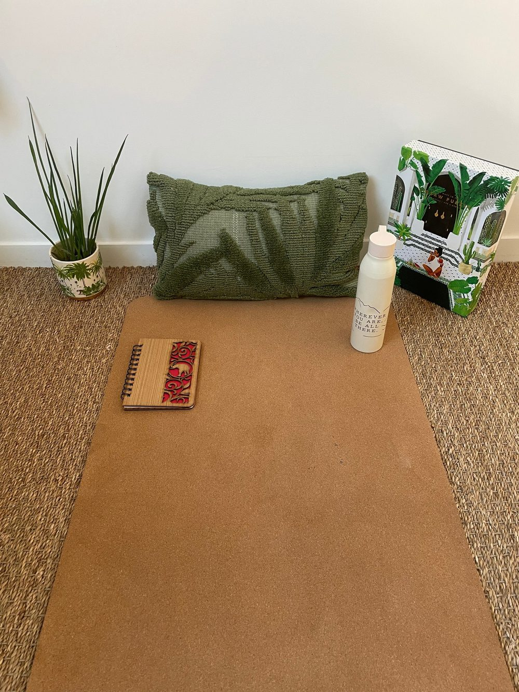

Soin habillé, allongé sur table. Imposition des mains et pressions douces relaxantes ; petit plus : le pendule avant la séance, axé sur les chakras.
Méditation Hatsurei Ho puis massage des bras, du visage, du cuir chevelu et des épaules, aux huiles d'aloe vera et de karité bio. Le soin se termine dans une véritable chrysalide.
Méditation Hatsurei Ho puis demi-jambe et réflexologie plantaire à l'huile végétale pure, crème au lait d'ânesse pour finir.
Lissages et manœuvres appuyées sur les jambes, les pieds et le bas du dos, gel rafraîchissant aux huiles essentielles de menthe, d'immortelle et de vigne rouge.
Ces soins ne remplacent en aucun cas un diagnostic et un traitement médical.
Reiki contre l'insomnie et les troubles du sommeil.
À partir de 6 ans.
Pour qui ne peut rester plus de 30 min allongé.
Reiki d'1 h : détente musculaire, moins de stress.
Trois séances de Reiki d'1 h 15 et un atelier créatif et méditatif à faire chez vous : créer votre carte illustrée façon oracle.

Postures de yoga, respiration, renforcement musculaire et relaxation. Le mardi à 17 h sur place ; les autres jours, Julie se déplace chez vous, au salon, au jardin ou dehors.
Une demi-journée au Touquet, d'avril à septembre : méditation, exercices doux, Reiki assis, collation detox offerte et bain de forêt dans la pinède.
N'oubliez pas votre gourde et votre tapis !
Participation libre et consciente
Pour tous les soins individuels (hors ateliers en groupe et guérison psychique). Espèces, chèques, paiement mobile ou virement.